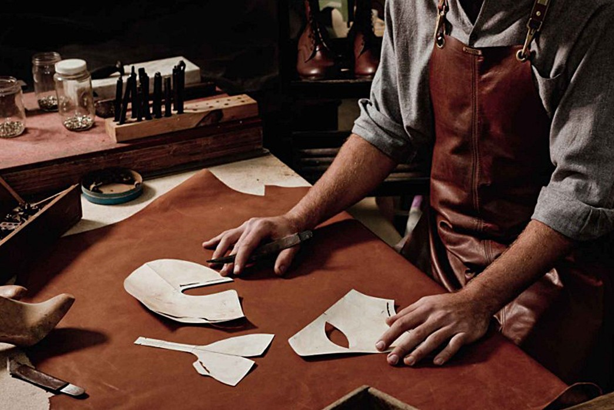
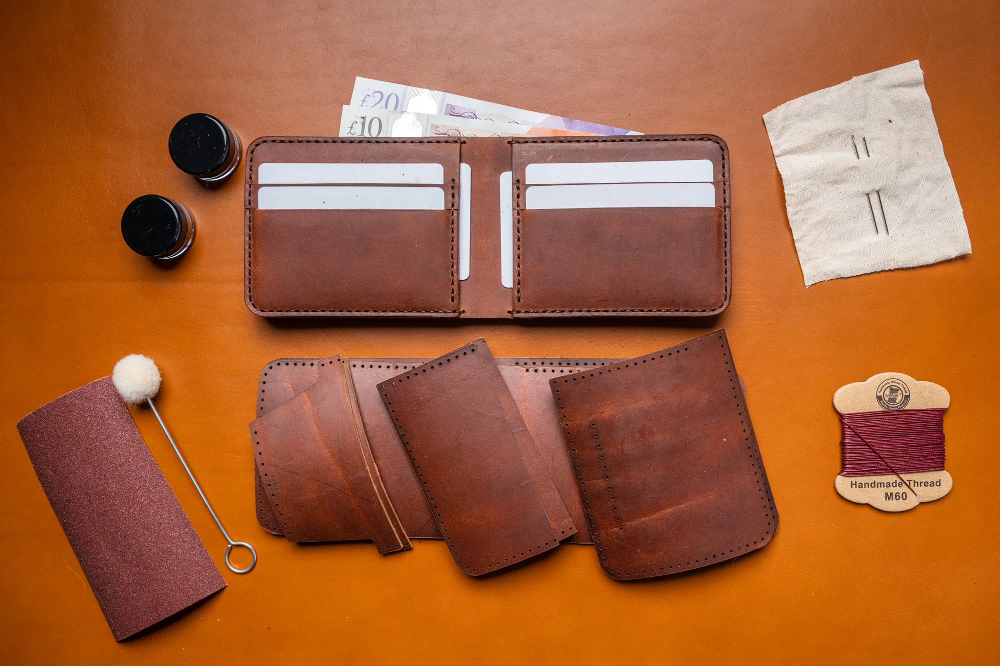

Шкіряні вироби — традиції, що живуть у кожній деталі
Виробництво шкіряних виробів — це не просто ремесло, це культурна спадщина, що передається
з покоління в покоління. Ми, в нашій майстерні, використовуємо тільки найкращі матеріали,
аби створити аксесуари, що не тільки виглядають розкішно, але й відображають душу кожного
виробу. Кожен наш продукт — це результат багаторічної праці, любові до ремесла і прагнення
до створення виробу, який буде служити своїм власникам довгі роки. Адже ми переконані, що
справжня краса знаходиться у кожній деталі — від вибору шкіри до процесу виготовлення.
Кожен виріб — це історія
Натуральна шкіра — це один з найбільш стародавніх і благородних матеріалів, що втілює у
собі всю красу природи. Вона живе і дихає, набуваючи нових відтінків з часом. Кожен клаптик
шкіри, який ми використовуємо для створення наших виробів, обирається ретельно. Ми працюємо
лише з високоякісною шкірою, обробленою з урахуванням екологічних стандартів, що гарантує її
довговічність і здатність зберігати свої властивості навіть після багатьох років використання.
Наші вироби відображають красу і силу природи. Завдяки уважному ставленню до процесу обробки
ми зберігаємо автентичність шкіри, підкреслюючи її природну текстуру та властивості. Тому кожен
наш продукт має не лише естетичну цінність, але й екологічну, оскільки ми дбаємо про те, щоб
кожен виріб був не лише красивим, а й створеним у гармонії з навколишнім середовищем.

Шкіряні аксесуари — це не просто стиль, це інвестиція в якість
Шкіряні вироби — це не лише модний аксесуар, але й інвестиція в якість, на яку ви можете покластися.
Вони є символом надійності та елегантності. Шкіра, як матеріал, має унікальну властивість ставати
кращою з часом: вона набуває нових відтінків і глибини, роблячи кожен аксесуар ще більш привабливим.
Крім того, високоякісні шкіряні вироби мають надзвичайно довгий термін служби. Правильно доглянуті
аксесуари зі шкіри зберігають свою функціональність і естетичний вигляд на багато років, і з
кожним використанням вони стають лише кращими. Отже, інвестуючи в шкіряний виріб, ви не лише
отримуєте стильний аксесуар, але й надійного супутника, який буде радувати вас і виглядати як
новий навіть через багато років.